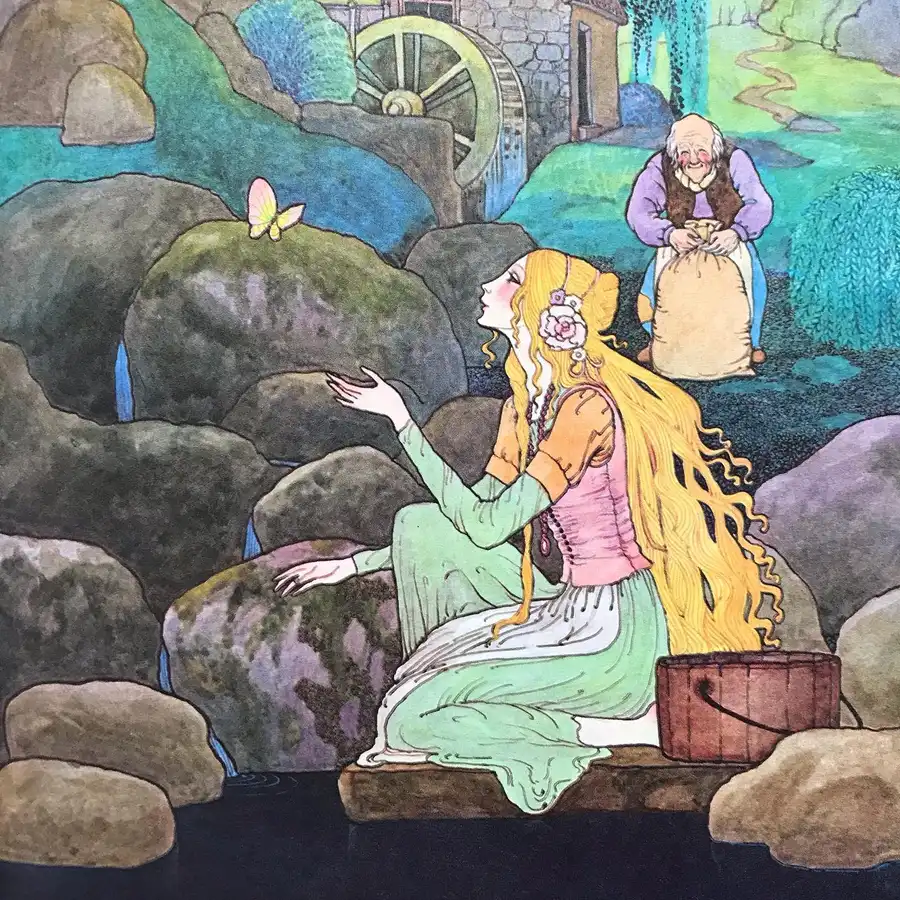
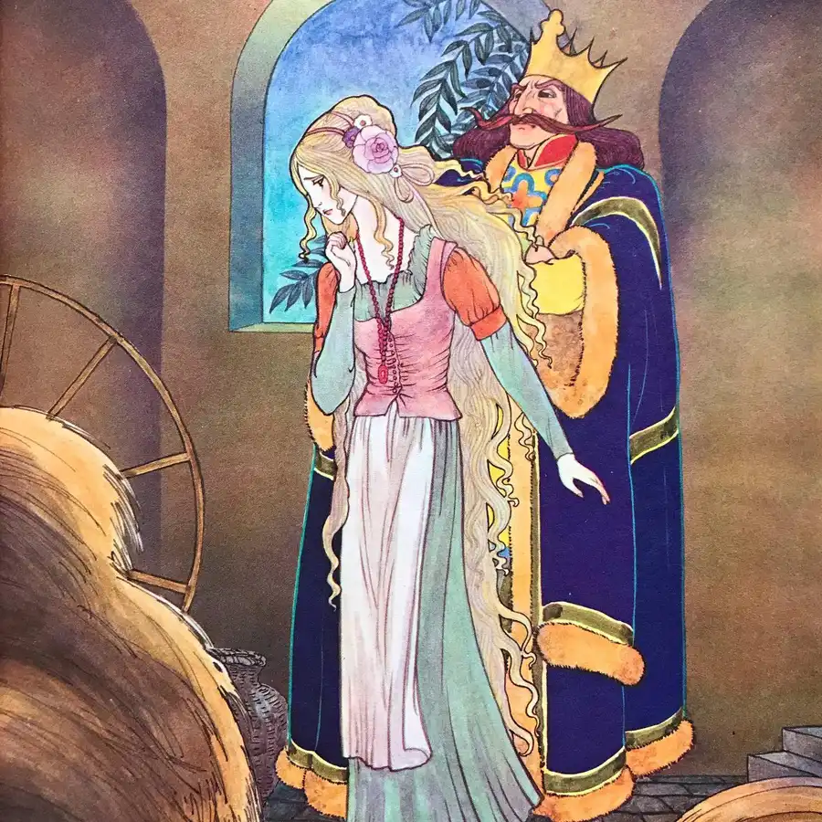
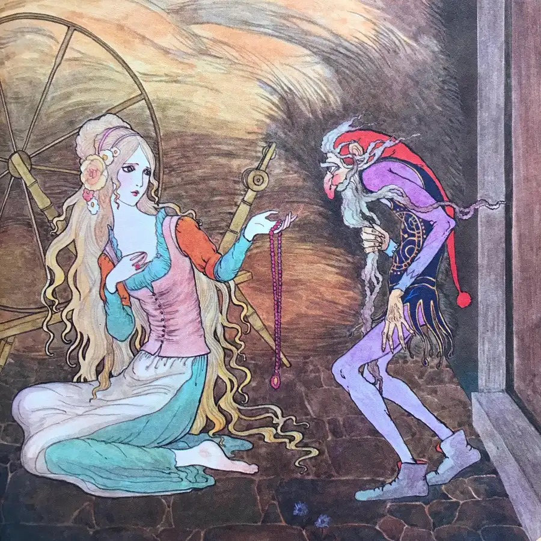
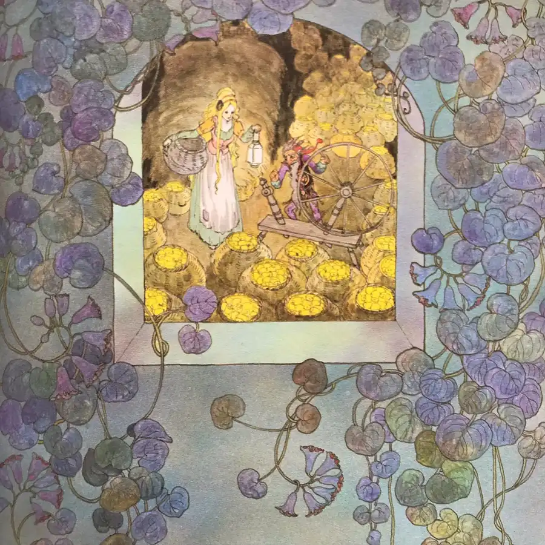
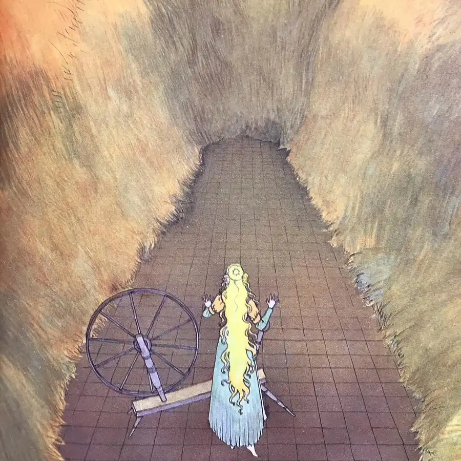
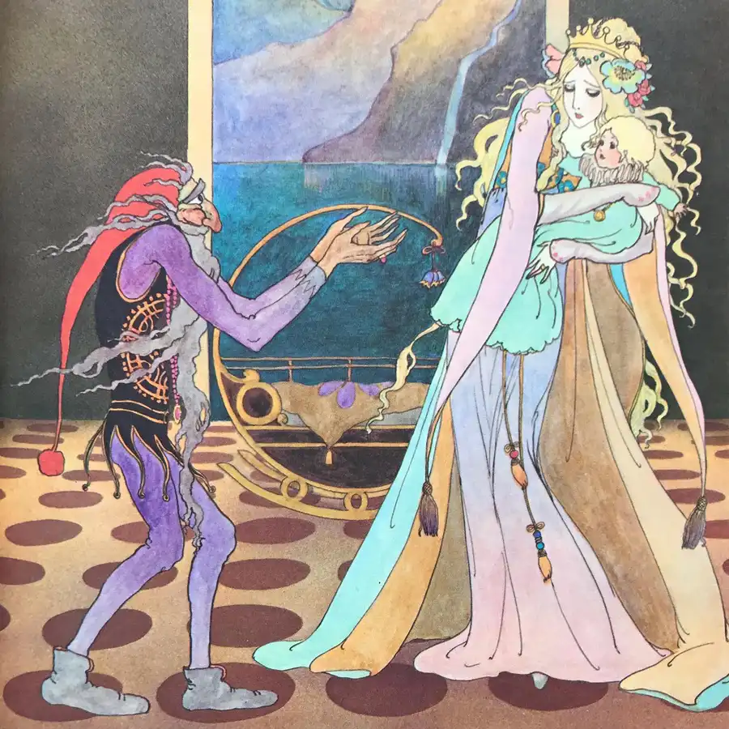
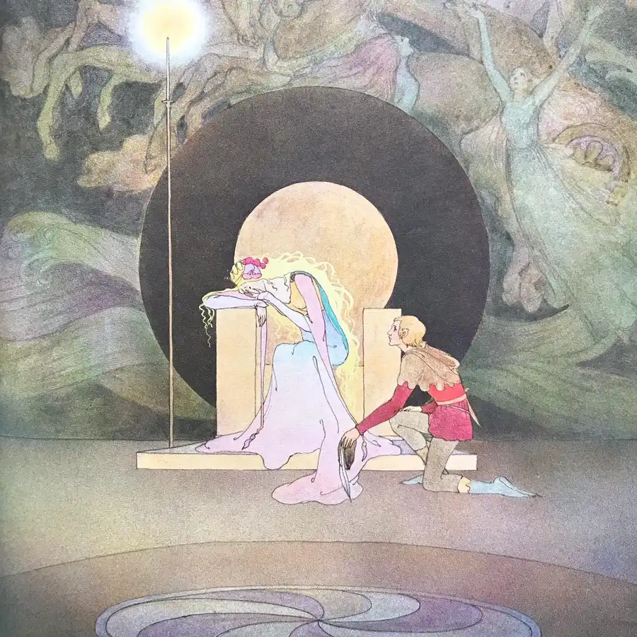
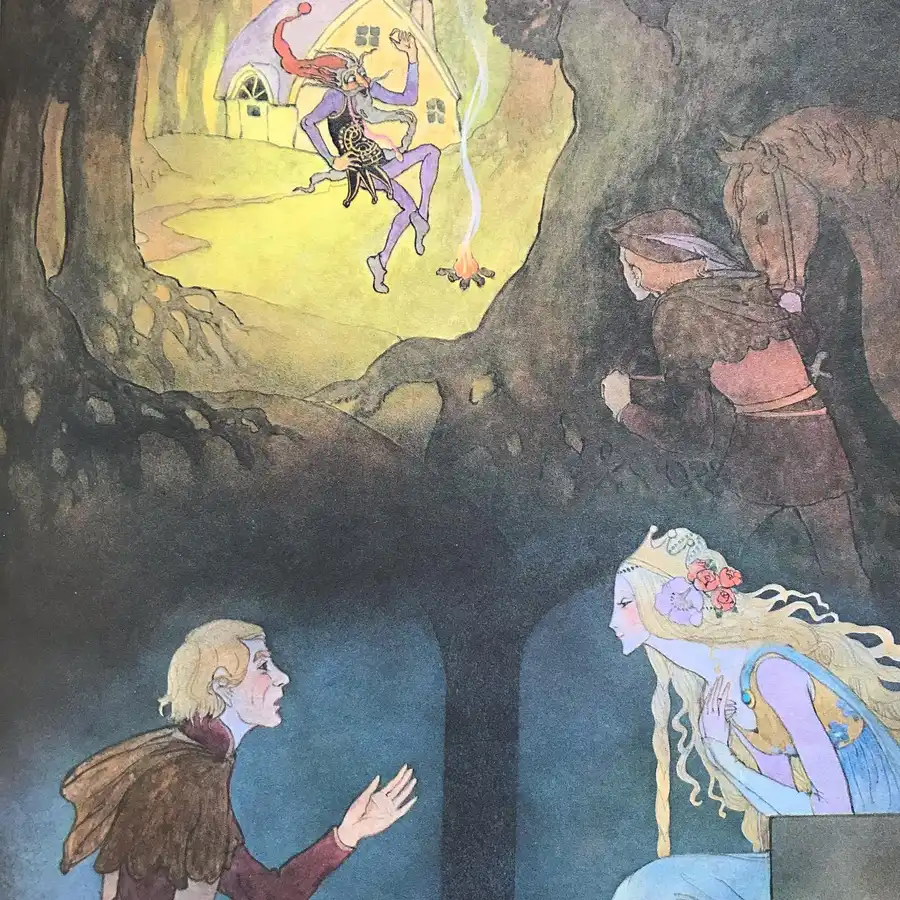
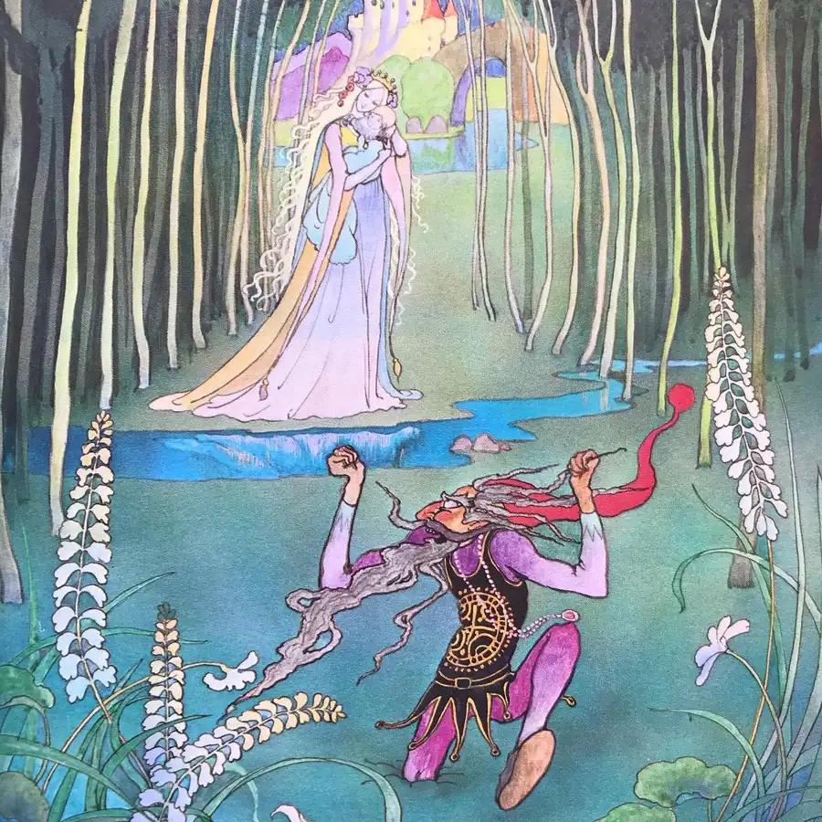

This Rumpelstiltskin adaptation features luminous illustrations by none other than Kinuko Y. Craft. The text hews quite closely to the original language of the Brothers Grimm. The characters, with their elongated limbs and angular poses, appear quite at home in the glimmering, eldritch environments. Executed quite early in Craft’s career, the art is quite fascinating to consider from an extradiegetic perspective. Much flatter and more graphic than the painterly style typical of her later oeuvre, they bear the visual influence of Hilary Knight, who himself incorporated elements of the work of Kay Nielsen, who was in turn greatly inspired by the technique of Aubrey Beardsley, who drew from the potent imagery of Japanese printmaking. #spin #spinning #wheel #gold #queen #baby #name #book #books #childrensbooks #beautifulbooks #picturebook #picturebooks #picturebookillustration #picturebookillustrations #picturebookart #childrensbookillustration #childrensliterature #illustration #kidlit #kidsbooks #bookworm #booklover #booklovers #bibliophile #bookstagram #bookstagrammer #bookstagrammers #instabook #instabooks









